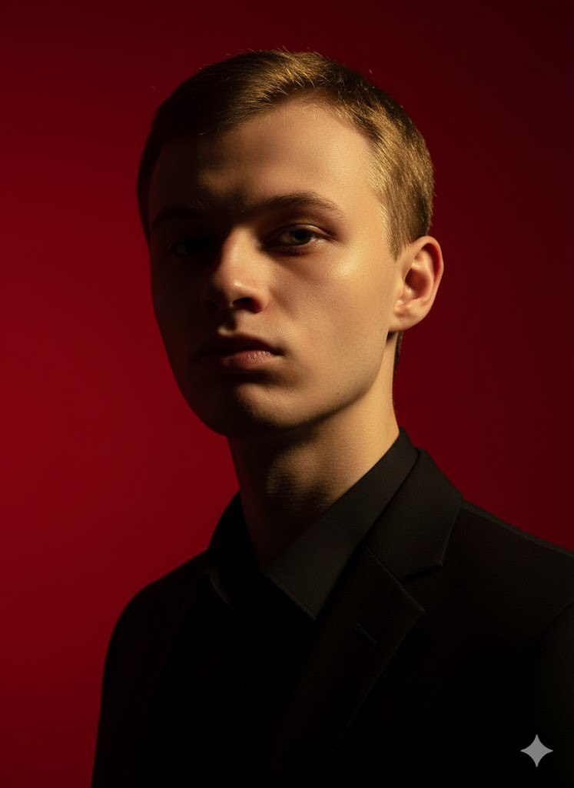

О разработчике

Владимир Гончаров
Я являюсь студентом 3-го курса ФТФ ИВТ-3 и изучаю основы WEB-программирования.
Этот сайт разработан в рамках лабораторной работы №1 по дисциплине «WEB-программирование».
Цель проекта — изучить структуру HTML-документов, освоить основные HTML-теги и научиться оформлять веб-страницы с помощью CSS.
Использованные технологии: HTML и CSS.
Профессиональные навыки
Ниже представлены уровни владения технологиями и инструментами.
Информация о проекте
Какие технологии использовались?
Для создания сайта использовались HTML5 и CSS3. Разработка выполнялась в среде Microsoft Visual Studio.
Для чего создан этот сайт?
Сайт создан для выполнения лабораторной работы и изучения основ разработки многостраничных веб-сайтов.
Дополнительная информация
В процессе разработки были изучены семантические элементы HTML5 и основные возможности CSS.
Что было изучено
- Структура HTML-документа
- Работа с текстом и изображениями
- Создание таблиц и форм
- Оформление страниц с помощью CSS
Освоение материала
Условный уровень освоения:
Полезные сведения
Главный файл сайта называется
index.html.
Для сохранения изменений используется
сочетание клавиш Ctrl +
S.
Изучение структуры HTML-документа, изучение тегов разметки HTML и применение стилизации CSS. Создание простого HTML-документа.
Лабораторная работа №1